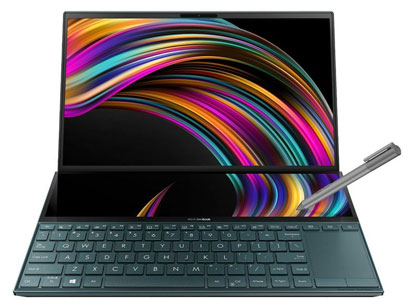

Perfil del Usuario.

Los diseñadores abarcan una variedad de especialidades, incluyendo diseño gráfico, diseño web, ilustración, diseño de productos y más. Su trabajo implica el uso de software exigente que requiere un rendimiento robusto, buena calidad de visualización y capacidad para manejar archivos grandes.
Especificaciones Recomendadas.
Procesador:
- Intel Core i7 o AMD Ryzen 7. Estos procesadores son ideales para manejar el software de diseño más pesado y las tareas multitarea.
RAM:
- 16 GB como mínimo (idealmente 32 GB). Esto es crucial para trabajar con archivos grandes y realizar tareas múltiples sin que el sistema se ralentice.
Almacenamiento:
- 512 GB o 1 TB SSD. Los SSDs son esenciales para cargar programas rápidamente y acceder a archivos de manera eficiente.
Gráficos:
- Tarjeta gráfica dedicada como NVIDIA GeForce RTX 3060 o superior, o AMD Radeon Pro para asegurar un rendimiento gráfico óptimo.
Pantalla:
- 15-17 pulgadas con alta resolución (al menos 1920 x 1080 o 4K) y cobertura de color del 100% sRGB o más para mayor precisión de color.
Sistema operativo:
- Windows 10/11 o macOS, dependiendo de la preferencia personal y del software específico que se utilizará.
Consejos Adicionales.
Tabletas gráficas:
- Considera una tableta gráfica como Wacom o Huion para la ilustración y diseño, que puede conectarse a través de USB o Bluetooth.
Almacenamiento externo:
- Un disco duro externo o almacenamiento en red para copias de seguridad de proyectos y archivos grandes.
Accesorios:
- Invierte en un mouse ergonómico, un teclado mecánico y un soporte para la laptop para mejorar la ergonomía.
Necesidades Específicas.
Opciones de Dispositivos.

Laptops:
- Apple MacBook Pro (M1/M2): Excelente rendimiento gráfico y pantalla retina.
- Dell XPS 15: Potente y con pantalla de alta calidad.
- Razer Blade 15: Elegante y potente, ideal para diseñadores que también juegan.
PC de escritorio:
- iMac (M1/M2): Todo en uno con pantalla de alta resolución y potencia.
- HP Envy Desktop: Gran equilibrio entre precio y rendimiento.
Monitores externos:
- LG UltraFine 4K/5K: Excelente reproducción de color, ideal para diseñadores gráficos.
- BenQ PD3220U: Monitor diseñado para creativos, con buena precisión de color y conectividad.
Nuestra Perspectiva.
Al elegir un computador para diseñadores, es esencial priorizar un rendimiento gráfico sólido, una pantalla de alta calidad y un sistema que pueda manejar multitareas. Las especificaciones recomendadas aseguran que los diseñadores puedan trabajar de manera eficiente y creativa, utilizando las herramientas adecuadas para llevar a cabo sus proyectos.